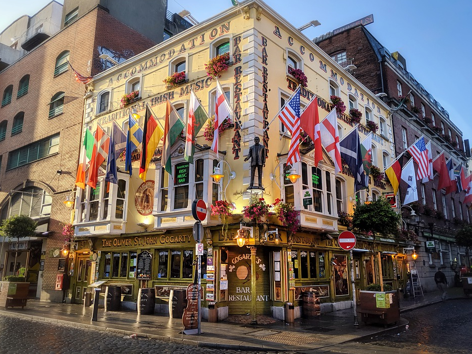
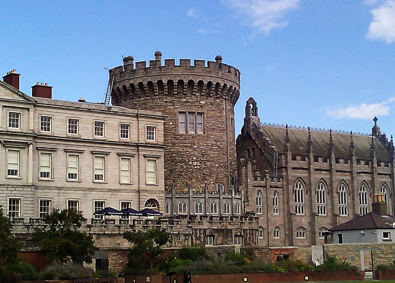
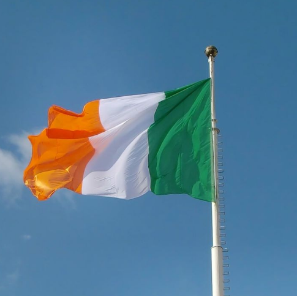

Dublin 2013.ie
"Even a short stay in Dublin is like walking into literary history, accompanied by music."

Dublin History
The first mention of Dublin dates back to the 8th and 9th century when Viking raids were a common occurrence. These raids are what led to the establishment of settlements which took place on the southern side of the mouth of Liffey, which went by the name Dubh Linn. This naming was a way to recognize the lake where the Danes first got to moor their boats. It also went by the name black pool.
Dublin had numerous stone fortifications during these centuries. However, they did not protect it from the sacking that took place over the next two centuries following the establishment of settlements. Residents in the town always found ways in which to rebuild their homes and get on with their activities. As such, the city had made many milestones by the 11th century regarding trade. People in the area fostered good trading links with traders in the nearby towns such as Bristol and Chester. Over time, Dublin got to be one of the most critical cities in Ireland. At that time, it had a population of about four thousand people.
The middle ages
As from 1169, the Norman rule began, and it went on for the next seven hundred years. Mac Murrough who was the king of Leinster at the time consulted with Strongbow who served as the Earl of Pembroke. Together, these heads plotted ways in which they could conquer Dublin. Mac died a while later. Soon after his death, Strongbow took over the kingdom of Leinster, and he fought against the Vikings as well as the high king of Ireland over the control of Dublin. Strongbow succeeded in the war. The king of England was unsure of whether Strongbow would become too powerful a force to reckon with and thus, he took hold of the opportunity and declared himself the lord of Ireland. Shortly after his declaration, he bestowed Dublin to merchants operating in Bristol.
In 1190, people living in Dublin underwent a significant loss when the city got devastated by fire. They were able to pick up the pieces once again and in the 13th century, they built a stone fortress in the town. Soon after, developments started taking place in the city such as the appointing of a mayor in 1220. The city began to experience growth both in population as well as in trade. At the end of the 13th century, Dublin had a population of over 8,000 people and was once again a flourishing trade center. All these milestones took place despite an attack on the city by the Scots in 1317
As from the 14th century all through to the 18th century, Dublin was part of the English Crown. During this time, it rose to be the second city of the British Empire. However, it was not all roses in this arrangement as there was a revolt in 1537, owing to the execution of the Lord Deputy of Ireland, an incident which took place in London. Following his death, his heir went on to renounce English sovereignty and set out to attack Dublin. He was successful in gathering an army, but he got defeated and executed before he could accomplish his wishes.
Dublin Sports
When traveling to a new place, one always wonders what they can do to make their experience memorable. We have an answer for you: sports!
The Irish have a deep love of sports, and the situation is no different in Dublin. The most popular games in the city are soccer, rugby and Gaelic football. The latter is a cross between rugby and soccer, and it attracts quite a considerable following. There is also hurling which is quite similar to lacrosse. However, this sport does not have as much audience as the previous three. For individual games, golfing takes the lead followed closely by water sports.
Soccer
If you are a soccer fan, you are set to have a great time in Dublin where there is always something exciting happening in this regard. If you take a look at the rankings in Ireland, you will see that Dublin has at least five teams at the top. One such organization is Shelbourne football club which has its base at Tolka Park. Another great team is Bohemians Football club with its headquarters in Dalymount Park. Other great teams are St Patricks Athletic football club based in Richmond Park, Shamrock Rovers football club and Dublin City with its base at Home Farm. It will also please you to know that the Irish national soccer team has some of its training sessions in the city. Other than watching players go about their matches, you too can participate in soccer. By looking into the 5-a-side options available in the town, you can get to be part of a team and show everyone what you’ve got. It should be lots of fun!

Gaelic football
Not many people have heard of Gaelic sports, and as such, you may get confused as to what the play is. It is a hybrid between rugby and soccer, so you get to combine the best from the two sports, thus ending up with a fascinating game. The ball is round. However, the goal posts look like those you would find in a rugby match. When it comes to the gameplay, you can choose to kick, throw or carry the ball and thus there are many ways in which you could win the game.
Football falls into the category of Gaelic sports and is one of the most popular games in the city. Hurling is also loved, and it is more of playing field hockey in mid-air. Gaelic football and hurling are very popular in the northern side of Dublin, and they fall under the jurisdiction of the Gaelic Athletic Association. For league matches, the Dublin team plays at Parnell Park, and you can catch a game or two when you are in town. When it comes to championship matches, you will find the team in Drumcondra. Many local organizations in the city can introduce you to either of these sports. Get to play football the Irish way! It is an experience that you will not forget.

Rugby
While north-siders are all about hurling and Gaelic football, people living in the south have a love for rugby. As such, you will find that most rugby teams have their bases here at Ballsbridge and Donnybrook. One of the most famous clubs in this regard is the Dublin University. Interestingly, this club holds a title as one of the oldest rugby clubs in the world. How cool would it be to see where legends train for the upcoming matches? The only way to find out is by visiting their home-ground. Rugby matches take place at the clubs’ pitches. The Irish Rugby Football Union works to promote the sport by helping people take part in it. As such, if you would like a go at it, you can reach out to one of their teams on the same.
Watersports
Are you more into sports played on water as opposed to those that take place on land? In Dublin, you can always count on the wind to help you in sailing as well as kite surfing. There are many coasts and slips from where you can enjoy watersports. If you have not taken part in any of these sports before, there are various clubs offering training on the same to both kids and adults. You can also rent a yacht and set sail to enjoy the beauty of this region.
DUBLIN TOURISM
"We seemed to be like startled earwigs in the first 15 minutes." -- Dublin boss Pat Gilroy on their collapse to Kerry.
As a tourist, an excellent way to enjoy your stay is to experience what the city has to offer. Here is what Dublin has in store for you:
Busy nightlife
Dublin excels in providing an exciting nightlife, and few European cities can offer the excitement that it has. By day, you will not notice most of the establishments as they come to life at night. Get treated to pubs, cinemas, restaurants, clubs, live music venues, and traditional Irish music clubs. As such, you do not have to limit yourself to one choice. There is no 24 hour licensing but the hours that you do get to spend in these establishments will be worth every penny spent.
If you wish to know a city and its people, do it in the dark. You will notice that Dublin is quite a young town with a laid-back attitude as expressed by its inhabitants. As such, you can take it easy and enjoy each moment you get to spend in their venues. You will find that the nightlife concentrates around a given area such that you can easily walk from one establishment to another. Also, it is safe to walk around at night so let go and enjoy your tour.
{kind=link}
{kind=link}
{kind=link}
Shopping
When the day comes, it is a great time to see what Dublin has to offer regarding shopping experiences. Here, you have two options. The first involves going to the north side of the city where you will find brands. The second includes going to the south side where you will get a multitude of local shops. Or even better, you could choose to get something from both sides, mix, match and enjoy the look!
Nassau Street has lots of Irish gifts including crafts, knitwear, tweeds, and other products in which you would have an interest. Grafton Street has a wide pedestrian zone which allows you to do window shopping at your convenience and when something catches your eye, you can dash in to see it. If you do get tired when shopping, you will quickly find a café from where you can relax and watch people go on about their business.
Eating Out
There are many restaurant choices in Dublin, owing to the increase of venues offering international cuisine over the years. Most of the restaurants offer Italian, French and Irish dishes among other delicious cuisines. Eating out in Dublin is pretty expensive when compared to other European cities. This cost owes to the high rents charged in the town. However, you can always opt for the traditional budget meal in this city which consists of fish, chips and a soda. Eating this will cost you ten Euros or less, and you should have enough to spend on other activities. Be sure to eat at least once in one of the fancy restaurants as the food will wow you.There are lots of tourist attractions in Dublin, and they include the Dublin castle, the Dublin Zoo, the Guinness Storehouse, the Irish Museum as well as other amazing places which you should tour when in the city. There are also sporting activities in which you can participate. As such, be ready to have the time of your life as you open up to the relaxed atmosphere that envelops this beautiful city.
DUBLIN LANDMARKS
“A man’s errors are his portals of discovery”.
- James Joyce
{kind=link}
{kind=link}
{kind=link}
Dublin has gone through remarkable changes over the centuries and thus has a lot of history to offer tourists coming to the city. You can think of it as a town where the old and the new combine to create a solid foundation on which the future will thrive. A wise man once said that you could not build a future if you do not understand the past that led to your present. As such, it seems fit to go back to how this city began by visiting its landmarks.
The bus tour
If you wish to view the beautiful sights located in the city center, the best way to do so would be by bus. Here, you would have a guide point out the different attractions and their importance. The thing with this bus is that you can hop off at any point and catch a later one to the next destination. You can also use the south coast tour bus which will take you through Dalkey all the way to the Powerscourt home in the Wicklow Mountains. The north coast tour, on the other hand, brings you all the way to the Malahide Castle. You can catch both buses to get the most out of the guides.
The Dublin Castle
This structure lies in the heart of historic Dublin. It came about in 934 and withstood the test of the time as the Vikings and English battled it out in a bid to control Dublin. For over ten centuries, it has been and remains to be a testament of strength for this city. Visiting it is a great place to start the journey as to how Dublin came to be as well as crucial lessons as to the growth of Ireland.
The Dublin Zoo
This zoo came about in 1830 and remains to be the fourth oldest of its kind in all of Europe. It is in Phoenix Park and receives close to a million visitors in a year. Here, you get to view a large selection of animals enclosed in an area with breathtaking surroundings. Get to sharpen your knowledge regarding how humans affect animals and vice versa, as well as how you can aid in conservation efforts.
The Guinness Storehouse
If you enjoy beer, then this is your chance to see how it gets made. This storehouse lies in the Guinness brewery, and here, you get to go through a two and a half century journey as to how the brew is what it is today. You get to see the beer getting made as well as to sample it at their bar named the gravity bar. This bar is the highest bar you will ever get to visit in Ireland and on a clear day, you can enjoy an unobstructed view of the city.
Trinity College
Queen Elizabeth I takes credit for the founding of this institution which has educated the elite for centuries. If you were to get here without knowing it was a university, you would think it was a town. It comprises of grounds, a library, a cricket pitch as well as other features which add to its air of wealth.
The National Museum
This museum has branches across Dublin where you can get to view historical pieces. Gold ornaments such as the Ardagh Chalice as well as the Tara Brooch are here, and you can see their designs and bathe in their beauty.
Who is Jordan?
Jordan A. Fresher is a 32-year-old IT technician who enjoys eating out, sailing and duck herding. He likes history and any kind of sports, hates no educated and lazy people.
He is Irish who defines himself as straight. He has a degree in computing. He has a severe phobia of sharks, and is obsessed with jazz.
Physically, Jordan is in good shape. He is very short with pale skin, blonde hair and blue eyes. He has a tattoo of a trombone on his left shoulder.
He grew up in an upper class neighbourhood. After his mother died when he was young, he was raised by his father
He is currently married to Edna Alana Smith. Edna is 14 years older than him and works as a plumber.
Jordan has one child with wife Edna: Dillon aged 7.
Jordan's best friend is an IT technician called Tara Bell. They are inseparable. He also hangs around with Devon Reyes and Billie Hunter. They enjoy relaxing together.
Get in touch
-
Email
information@dublin2013.ie
-
Phone
(888) 301-2366
-
Privacy
©All rights reserved.